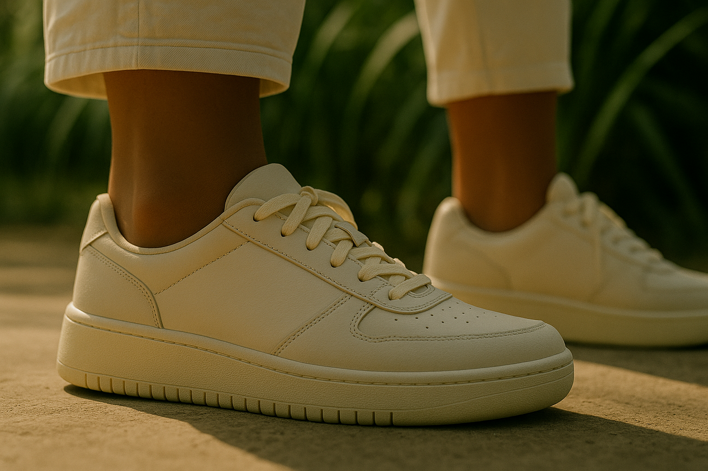

品牌故事
Brand Story
走出城市的節奏，穿上自己的步調。
我們相信，每一雙鞋都該帶著個性出場。
在 URBNSTEP，我們認為鞋履不只是穿戴飾品，更是你與世界連結的語言。
融合城市結構與機能語彙，我們打造適合都會節奏的風格鞋款，陪你自信穿梭每一場風景。

-
品牌簡介
URBNSTEP 是來自台灣的街頭機能鞋品牌，致力於打造「風格與功能並存」的鞋履體驗。
在城市與日常的交錯中，我們看見了步伐的力量。URBNSTEP 誕生於一群設計師與文化觀察者的交會點——一個相信風格應該來自「真實場景」而非伸展台的團隊。從都市的清晨街角，到午後光影灑落的人行道，我們捕捉的是那些不被刻意編排的時刻，那些用一雙鞋踏出的態度與節奏。每一款鞋的誕生，不只是設計與工藝的結晶，更是一段來自城市靈感的延伸，我們相信：鞋，是穿在腳上的語言。
URBNSTEP 的名字來自 Urban + Step，代表著我們對每一個走進城市生活的人致敬。我們不追逐潮流，我們關注輪廓、材質、穿著者的心境與身型，創造能陪伴你走進自我節奏的經典之作。選用高品質麂皮、織物與天然橡膠大底，並與獨立插畫家、攝影師合作，打造具有街頭詩意的形象風格。URBNSTEP 相信，美不是炫耀，而是由內而外的呼吸——一雙鞋，剛好說出你心中的樣子。
-
品牌歷程
- 2019URBNSTEP 在台北東區的創意工作室誕生。
- 2021首款【Urban Flow 系列】誕生，結合針織鞋面與城市靈感。
- 2025URBNSTEP 已成為台灣街頭生活風格的代表鞋履品牌之一。
-
品牌理念
- 機能先行：輕量、透氣、防潑水
- 美學延伸：極簡線條 + 實驗配色
- 永續材料：選用環保合成皮革與可回收包裝
-
品牌小故事